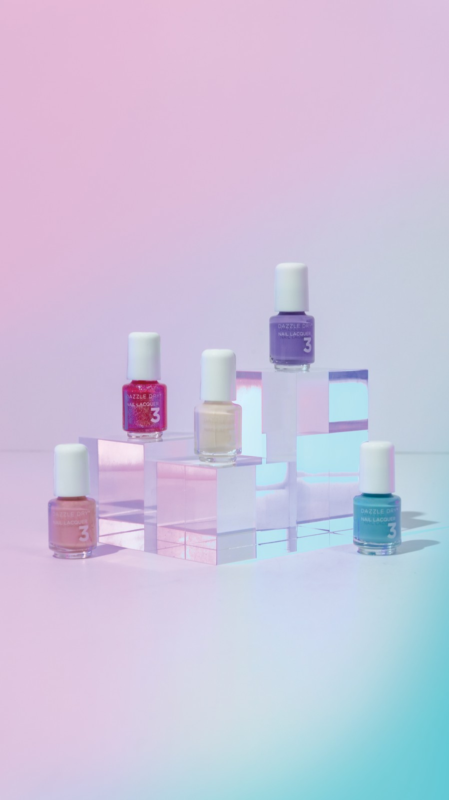
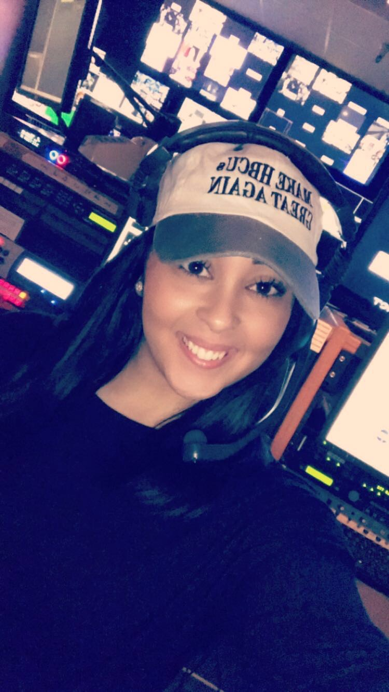
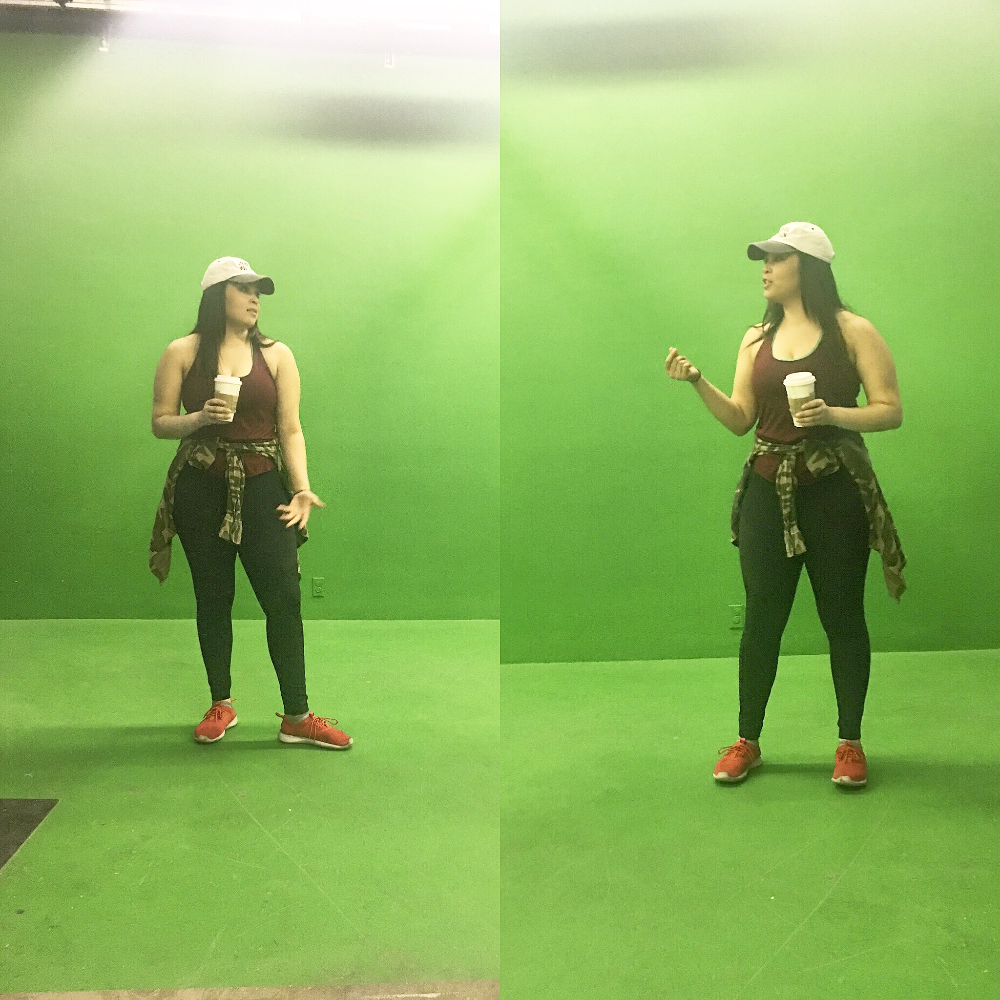
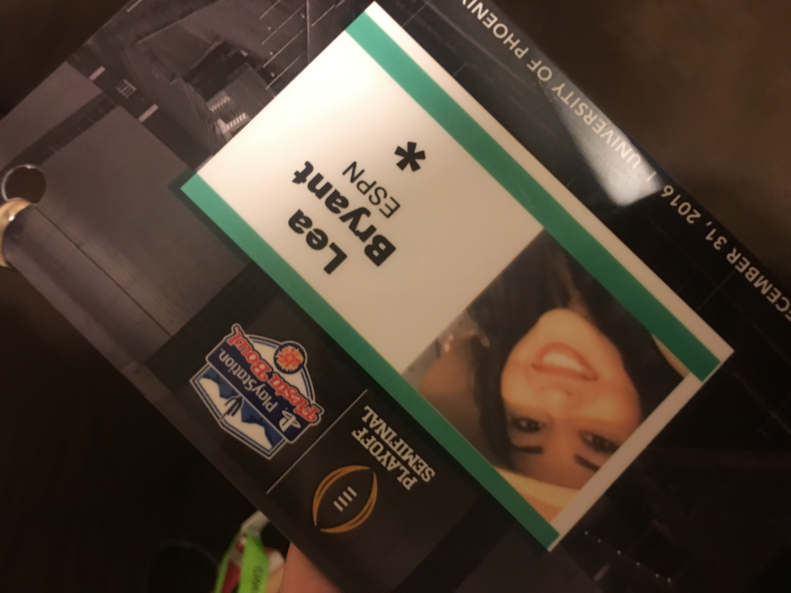

Digital content leadership
SVP Worldwide · CREATIVATE™Digital content strategy, editorial planning, global coordination, membership experiences, and collaboration across product, marketing, and engineering.
Explore this chapter ↗THE PROFESSIONAL JOURNEY
Digital content, creative production, journalism, and the work that connects ideas with real experiences.
THE CAREER CHAPTERS
My career hasn't followed one straight line. Every industry, role, and experience has added something to how I think, create, and lead.
Digital content strategy, editorial planning, global coordination, membership experiences, and collaboration across product, marketing, and engineering.
Explore this chapter ↗Creative production, product photography, social media content, advertising video, and performance reporting.
Explore this chapter ↗Program reporting, stakeholder coordination, operations, and initiatives supporting education and community needs.
News and sports production, camera operations, audio, graphics, and digital storytelling.
Explore this chapter ↗Equipment operations, inventory, uniforms, travel preparation, and supporting the team behind the scenes.
Explore my HBCU experience ↗SVP WORLDWIDE / CURRENT WORK
Digital Content Manager
2024–present
I connect content planning with the digital experience, helping people discover what they can learn and create.
My work spans editorial strategy, global content workflows, website messaging, membership communications, and collaboration across sewing, quilting, embroidery, and garment experiences.
I work across product, marketing, and engineering to turn priorities into clear, coordinated consumer experiences.
VB COSMETICS / DIGITAL & SOCIAL MARKETING
Product launch photography, social content, and videos I created, shot, and edited — combined with measurable channel performance.
Historical results from my work presentation. Reporting periods differ by platform.
VIDEO PRODUCTION
A sample of my product video work for Dazzle Dry.
PHOTOGRAPHY & VIDEO STILLS




JOURNALISM & BROADCAST PRODUCTION
CBS affiliate production
2015–2017
From the camera to the control room, storytelling taught me the value of every detail.
My production experience includes studio cameras, audio, graphics, B-roll, social content, and supporting scripts for sports packages.
BEHIND THE BROADCAST




ON-CAMERA SAMPLE
VIDEO STORYTELLING
ENTERTAINMENT INTERVIEW
DEVELOPMENT / A CREATIVE OUTLET
Learning to build for the web gave me another way to bring ideas to life. These projects explore collaboration, accessibility, and interactive applications.